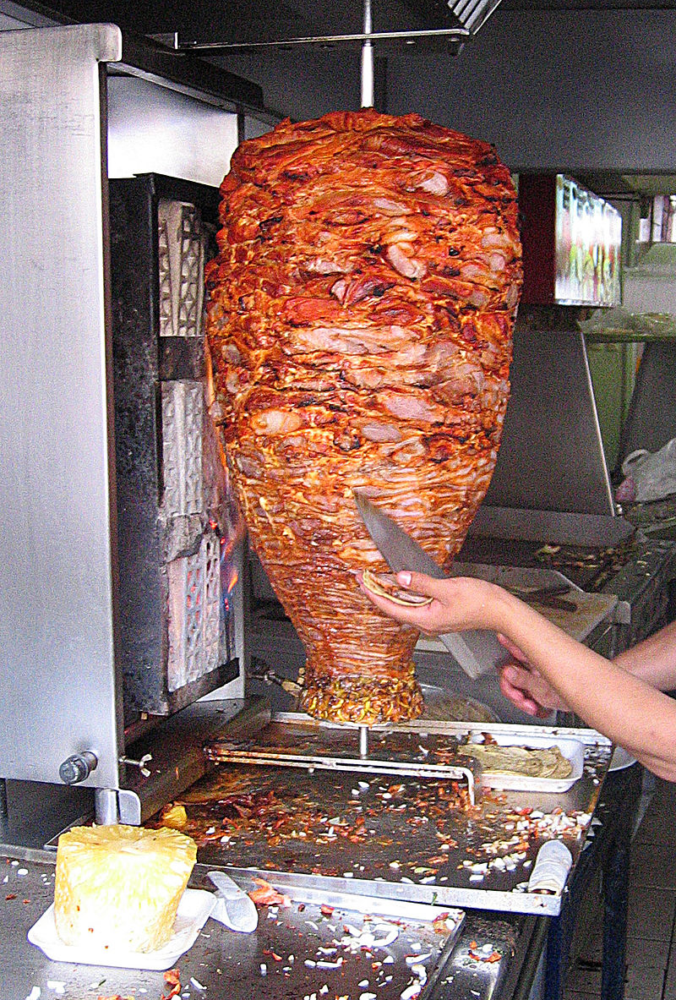

Los tacos son un plato tradicional mexicano que ha ganado popularidad en todo el mundo. Su origen se remonta a la antigua cultura mexicana y ha evolucionado a lo largo de los siglos.
punto de vista de los arabesLos antiguos habitantes de México, como los aztecas y los mayas, ya consumían alimentos envueltos en tortillas de maíz hace miles de años. Estos alimentos envueltos se consideran los precursores de los tacos.
La palabra "taco" se cree que proviene del náhuatl "tlahco", que significa "mitad" o "en el medio". Se cree que los primeros tacos eran tortillas dobladas que se usaban para recoger alimentos.
Con la llegada de los españoles y la introducción de ingredientes como la carne de res y el cerdo, los tacos comenzaron a evolucionar. La carne asada se convirtió en un relleno popular en la época colonial.
México es un país diverso, y cada región tiene sus propias variedades de tacos. Por ejemplo, los tacos al pastor son populares en la Ciudad de México, mientras que los tacos de pescado son comunes en las regiones costeras.
En el siglo XX, los tacos comenzaron a ganar popularidad en todo el mundo gracias a la migración de mexicanos y la difusión de la cultura mexicana. Hoy en día, los tacos se disfrutan en muchos países y han dado lugar a una amplia variedad de rellenos y estilos.
La historia de los tacos es rica y diversa, y sigue evolucionando a medida que los chefs y cocineros experimentan con nuevos ingredientes y preparaciones.
